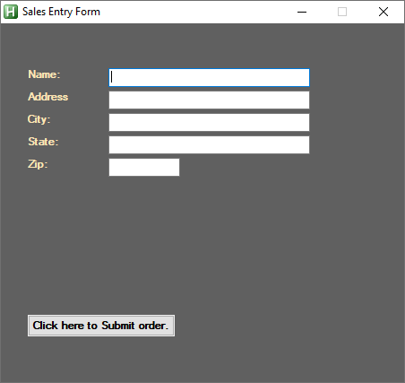
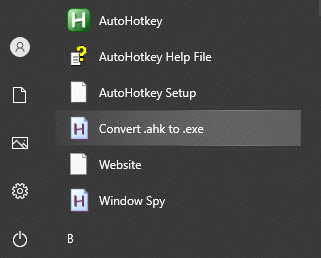
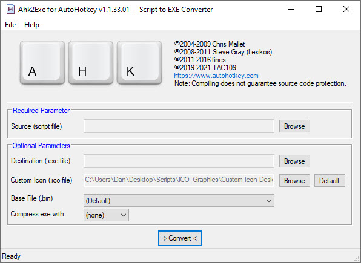
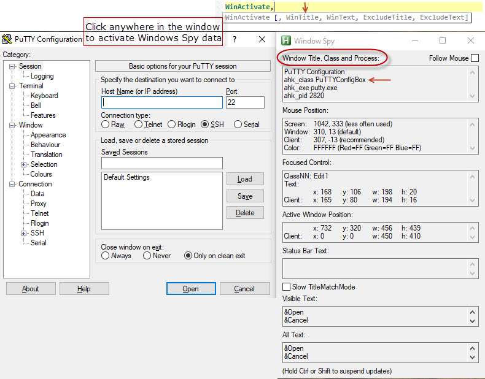
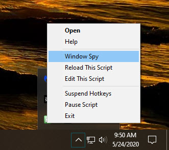

Auto Hot Key ...... AutoHotKey Forum
The Automator
- Open Scite Editor and click file new.
- Save the new file
For Help Click Windows Start > AutoHotKey > AutoHotKey Help File
Special keys
- Ctrl = ^
-
Example:
luckynumber:=77
Inputbox,temp, , Enter Lucky Number
Sleep,333
IF(temp!=luckynumber)
{
Msgbox,Oops that's Not the lucky numbrt, try again.
}
Else
{
Msgbox, You choose the Lucky Number!
}
return -
My_Password:="PassWord"
Inputbox,userinput, , Please enter PW
Sleep,333
If(userinput == My_Password)
{
Msgbox,Correct Password
}
Else
{
Msgbox,Password is Not Correct
}
return
Shift = +
Alt = !
Win = #
& is ampersand (used to combine two components)
SendMode Input
`t = Add a Tab. Note the ` is on the Tilde key and is commmonly used like this:
Inputbox,user_input,`t, Enter text to determine if it is in the Test Case. The Title of the inputbox will be blank.
`n = next line or new line
~r = Carrage Retrun
Send,{Tab} = Tab to the right
Send,{Tab}^ = Tab to the left or reverse tab != ... Not Equals or Does not equal
= ... Equals matchs upper and lower case as the same
== ... Equals Equals must be an exact match (Use for pw like this)
Math Add Subtract Multiply Divid
- ^D::
InputBox,VAR,Enter Airport Elevation ;~(VAR is the variable)
InputBox,ALT,Enter Current Elevation ;~(ALT is the variable)
Base := 1800 ;~(Base is the altitude we want to get to)
V2 := Base + Var ;~(V2 is the Base plus+ Airport Elevation)
V3 := ALT - V2 ;~(V3 is Airport elevation less - Current elevationi)
V4 := V3 * 0.1 ;~(V4 = V3 X 0.1 because xplane A/P Altitude changes in lots of 10)
loop %V4%
{
Send, "{u Down}"
Send, "{u UP}"
}
return
This will open a label in CQL
- InputBox,Soldas,Enter Sold As Number
SetCapsLockState, On
folderPath = C:\Users\Dan\Documents\QuickLabel\CQL Pro\Labels filePath = %Soldas%.qll
ScriptFullPath = "L:\Mouse\CheckfolderforSoldasNumber.ahk"
if FileExist(folderPath . "\" . filePath)
{
InputBox,SN,Enter Serial Number
}
else
{ MsgBox,4,,The label does not exist.`r`n Would you like to check another ID?
Sleep,1000
IfMsgBox Yes
Run,%ScriptFullPath%
Return
IfMsgBox No
return
} Run, "%folderPath%\%filepath%"
Date format
-
FormatTime, now,, yyMMdd ; keep the CASE as shown
SendInput %now%
Progress Bar
- #NoEnv
#SingleInstance,force
Progress,b w200,My Subtext,My Maintext,My Title
Progress,10 ; set the position of the bar to 10%
Sleep,250 Progress,off
Optional - Msgbox,0,,Done!,3
Keywait
- Keywait,Enter,D ; this will stop AHK until Enter is pressed
Trim Left & Right
- InputBox,sn11d,Enter 11 digit serial number
String = %sn11d%
String = %sn11d% Trimright, stockid, String, 6
String = %sn11d% StringTrimLeft, Serial, String, 5
If VAR Length = 11
- #NoEnv
#SingleInstance,force
CoordMode,Window
InputBox,sn11d,Enter 11 digit serial number
t=%sn11d%
y = % StrLen(t)
if y = 11
{
goto line4
}Else{
msgbox, Scan is not 11 digit serial number. Please try again
return
}
Line4:
MsgBox, YOU MADE IT THE END
return
^x::ExitApp
#Include
The Request to the Function.
#Include, C:\AHK_Scripts\FUNCTIONS\MyFunc1.ahk
#SingleInstance,Force
f1:: (Must use a hotkey)
InputBox,x,Enter your Name
MyFunc1(x)
return
^x:: ExitApp
=== The Function ===
MyFunc1(Var)
{
global
MsgBox, Hello %var% lets open Google
Run,www.google.com
}
return
All Scripts should Start and End with:
-
#NoEnv
- your code here
#SingleInstance,Force
CoordMode,Window
^X::ExitApp
AHK Choose a Printer
-
#NoEnv
#SingleInstance,force
CoordMode,Window
F1::
Run, var1.txt - Notepad, C:\Dan\openclose ;snagit
WinWaitActive,var1.txt - Notepad
var :=1
goto prt
return
F2::
run,var2.txt - Notepad, C:\Dan\openclose ;onenote
WinWaitActive,var2.txt - Notepad
var := 2
goto prt
return
F3::
run,var3.txt - Notepad, C:\Dan\openclose
WinWaitActive,var3.txt - Notepad
var := 3
goto prt
return
prt:
SendInput,^p
Sleep,500
if var = 1
{
send, Snagit 11
Sleep,250
send, {Enter}
return
if var = 2
send, Onenote (Desktop)
Sleep,250
send, {Enter}
}else{
send, PDF Architect 6
Sleep,250
send, {Enter}
}
return
^X::ExitApp
CapsLock
- SetCapsLockState,on
return
SetCapsLockState,off return
Close all open programs, and put the Computer to Sleep or Turn it Off
-
#NoEnv
#SingleInstance,force
CoordMode,Window
F12::
; From: https://github.com/matthewmorrone/autohotkey/blob/master/dev/close-all-windows.ahk
WinGet, id, list, , , Program Manager
Loop, %id%
{
StringTrimRight, this_id, id%a_index%, 0
WinGetTitle, this_title, ahk_id %this_id%
winclose,%this_title%
}
;~This will put the computer to sleep
DllCall("PowrProf\SetSuspendState", "int", 0, "int", 0, "int", 0)
;~This turns the computer off
;~ Run shutdown /s
ExitApp
Return
^x::ExitApp
msgbox
msgbox, Print 4x4 Logo ; this
Logo = 1
gosub, template
return
!3::
MsgBox, Generic text
logo=2
gosub, template
return
template:
MsgBox, 4, 4x4logos,Would you like to print a 4x4?,5
IfMsgBox no
return
IfMsgBox Timeout
return
IfEqual,logo, 1
run,4x4wLogo.txt - Notepad
else IfEqual,logo,2
run, 4x4Generic.txt - Notepad
else IfGreater,logo,2
goto, LrowV return
;~Enter your code here
Lrow:
return
The Golf Swing
- #NoEnv
#SingleInstance,force
CoordMode,Window
RCtrl & y::
Click,200,20
Sleep,2000
MouseClickDrag,Left,200,20,200,650,8
Sleep,1
MouseClickDrag,Left,200,650,200,30,1
return
^x::ExitApp
Link to usable Commands
Gui with background & Transparent Text box
Gui, Add, Text, backgroundtrans x20 y40 gBrave, Brave ; This will keep the text box transparent
Gui Add horizontal and veritcal lines
-
Horizontal - gui, add, text, x30 y105 w200 h2 0x7
Vertical - gui, add, text, x30 y105 w2 h200 0x7
Drop Down List
-
^J::
List1:="Aqua|Brown|Black|Red|Green|Blue|Colors||"
Gui, Add, DropDownList,r5 sort vDDL gSWITCH,% List1
Gui,SHOW,X15 Y150 W150 H160
return
SWITCH:
Gui,Submit,NoHide
;~ tooltip, % DDL
if % DDL = "Aqua"
{
InputBox,5DIGIT, , ENTER CODE
RUN, C:\Users\wareh\OneDrive\Documents\%5DIGIT%.odt
}
if % DDL = "Black"
{
InputBox,5DIGIT, , ENTER CODE
RUN, C:\Users\wareh\OneDrive\Documents\TEST\%5DIGIT%.odt
}
return
GuiClose:
ExitApp
return
AHK Reads and Writes to and Reads from Excel
Tab Nation
Here we will look at three ways to gather data from an excel file. And best part is you dont even have to have excel open to grab data.
CODE:
inputbox,x,Enter Sold As ID
Path := "C:\Code\Coder1.xlsm"
xl := ComObjCreate("Excel.Application")
xl.Workbooks.Open(Path)
xl.visible := true
; xl.visible := false
| xl.Worksheets.("Home").Range("A1").value := "Dan" | (If Text) ... (Writes to excel - Cell A1) |
| xl.Worksheets.("Home").Range("A1").value := x | (If Variable) ... (Writes Variable to excel - Cell A1) |
xl.Worksheets.("Home").Range("H1") := x
Sleep,150
var1 := xl.Worksheets.("Home").Range("B1").TEXT .......... (Reads from Excel)
Sleep,150
var2 := xl.Worksheets.("Home").Range("AB1").TEXT .......... (Reads from Excel)
Sleep,150
PW1 := xl.Worksheets.("Home").Range("C1").TEXT .......... (Reads from Excel)
Sleep,150
PW2 := xl.Worksheets.("Home").Range("D1").TEXT .......... (Reads from Excel)
Sleep,150
PW3 := xl.Worksheets.("Home").Range("E1").TEXT .......... (Reads from Excel)
Sleep,150
PW4 := xl.Worksheets.("Home").Range("F1").TEXT .......... (Reads from Excel)
Sleep,150
PW5 := xl.Worksheets.("Home").Range("G1").TEXT .......... (Reads from Excel)
Sleep,200 ; Quit With-out saving
xl.quit()
send,{Tab}
send,{Enter}
send,%PW1%
sleep,200
Send,{Tab}
send,%PW2%
Send,{Tab}
send,%PW3%
Send,{Tab}
send,%PW4%
AHK Read / Write to Excel.xlsx
-
#SingleInstance,force
CoordMode,Window
;Display set for screen resolution of 1920x1080
^B::
InputBox,soldas,Enter Sold as Number
Path := "H:\Excel_XLSX\Sn_BinFile.xlsx"
xl := ComObjCreate("Excel.Application")
xl.Workbooks.Open(Path)
; xl.visible := true
xl.visible := false
xl.Worksheets.("Home").Range("D1").value := soldas ;(Writes Variable to excel - Cell A1)
sleep,500
var1 := xl.Worksheets.("Home").Range("E1").TEXT ;... (Reads from Excel)
Sleep,150
xl.quit()
sleep,1000
Send,{Tab}
Send,{Enter}
Sleep,500
WinActivate,SFP
Sleep,1000
Click,1015,430
Sleep,500
SendRaw,%var1%
sleep,500
Send,{Enter}
return ^X:: ExitApp
Open/Close Excel w/AHK
-
!q::
- IfWinExist, BAR_CODE.xlsm - Excel
{
goto Line1 ' this skips the opening of the Excel
}
;~ this opens excel should it not be open
Path := "E:\Excel\BAR_CODE.xlsm"
xl := ComObjCreate("Excel.Application")
xl.visible :=true
xl.workbooks.Open(Path)
Line1:
Inputbox,N, What is your Name ;N is the variable WinActivate,BAR_CODE.xlsm - Excel
xl := ComObjActive("Excel.Application")
xl.Range("A1").Select ;Selects Cell A1
xl.Range("C5").Value := "Danny" ;Enters Danny in cell C5
xl.Range("A6").Value := n ;Passes the variable (N). Note there are no %Percent% signs for (N). xl.Range("A1").offset(10,0).select ; Offsets(R,C).select
Click,470,267 'This will click on the macro button in excel. You will need to get X,Y location.
Click,300,15 ' This clicks on the save button
Click,853,10 'This click the " X " in the upper right corner to close the program.
return
Open/Close Add Data to the next open cell in column "A" in Excel w/AHK
-
!q::
IfWinExist, BAR_CODE.xlsm - Excel
{
goto Line1 ; this skips the opening of the Excel
}
;~ this opens excel should it not be open
Path := "E:\Excel\BAR_CODE.xlsm"
xl := ComObjCreate("Excel.Application")
xl.visible :=true
xl.workbooks.Open(Path)
Line1:
InputBox,i,What is your name
WinActivate,BAR_CODE.xlsm - Excel
xl := ComObjActive("Excel.Application")
xl.Range("A1").select ;This will select Cell A1
r:= xl.Range("K1") ; This will get the number in cell K1 (Note K! contains the formula =CountA(A:A)
xl.Range("A1").offset(r,0).select ; R is now the variable for the offset
xl.Activecell.value :=i ; Enter the variable (i) in the open cell in col. "A"
;~ r:= xl.Range("K1") ;R = Cell K1 which is =COUNTA(A:A)
;~ xl.Range("A1").offset(r,0).select ; Offsets(Var"R",C).select
;~ xl.Activecell.value :=i ;Passes the Variable to Cell A6
;~ Click,470,267 ; This will click on the macro button in excel
;~ Click,645,264 ; This runs second macro that autofits column C
;~ Click,300,15 ; This clicks on the save button
;~ Click,853,10 ;This click the " X " in the upper right corner to close the program.
return
Form (Basic Form)
-
#NoEnv
#SingleInstance,force
gui, +Alwaysontop
gui,Color,606060 ; This is the Gui background color
Gui,font,S9 c000000 bold ;Sets Font size & color
;---Text Names--------------------------------
Gui, Add, Text, x30 y50 cffe6b3 , Name:
Gui, Add, Text, x30 y75 cffe6b3 , Address
Gui, Add, Text, x30 y100 cffe6b3 , City:
Gui, Add, Text, x30 y125 cffe6b3 , State:
Gui, Add, Text, x30 y150 cffe6b3 , Zip:
;---Edit boxes to match Text Names------------
Gui, Add, Edit, x120 y50 w225 vName
Gui, Add, Edit, x120 y75 w225 vAddress
Gui, Add, Edit, x120 y100 w225 vCity
Gui, Add, Edit, Uppercase x120 y125 w225 vState
Gui, Add, Edit,Limit5 x120 y150 w80 vZip
Gui, Add, Button, x30 y325 cffe6b3 gSubmitBtn, Click here to Submit order. ; Submit Variables to Button press
gui,show,x1450 y100 w450 h400, Sales Entry Form
return
;---------------Labels-------------------------------------------------
SubmitBtn:
Gui, Submit
MsgBox %Name% `n%Address% `n%City% `n%State% `n%Zip%
ExitApp
return
;-----This will close the GUI Using the "X" in the upper right courner---
GuiClose:
*ESC::
ExitApp
^x::ExitApp

Open Printer
WinWaitActive, Devices and Printers,
Sleep, 500
Sending Text and Key Strokes
-
Sendinput, Dan .... Text up to 5000 characters ... This is much faster than Send alone,
Sendinput, Hello Dan `n (`n means next line) or (`r means carrage return)
Send, Dan ........... Sends Dan letter by letter
Send, {Enter} ...... Press the enter key
Send,{Tab}.......... Press the Tab key
Send,{Tab 5}........ Presses the Tab key 5 times
Send, ^s ............... This is the same as Ctrl +S
Send,#D ....... This is the same as Win+D but will fail. Use "WinMinimizeAll"
Change icon for AutoHotKey script
The Icon is done during the compiling of the script. Once it is done the .exe file can be pinned to the task bar.
|  Icons? Click here. |
 |
CapsLocks
#SingleInstance,force
CoordMode,Window
SetStoreCapsLockMode, Off
state := GetKeyState("CapsLock", "T") ; True if CapsLock is ON, false otherwise.
if (state = True)
SENDINPUT,{CAPSLOCK} ... (This line will presses the Capslock key only if capslock is True (ON))
return
^X::ExitApp
Move or Skip to another line in script
-
Goto, Label ... Example
- goto, MyLine1
MyLine1:
This will move the cursor to where ever you place the label Myline1:
GoSub (Calls a sub routine by Label name.
-
#SingleInstance,force
^t::
InputBox,name,What is your name
MsgBox,%name%, you are in the main routine
gosub 4x4 ; This calls the subroutine
return
4x4: ; this is the label of the sub routine
MsgBox,%name%, you are in the sub routine
^x::ExitApp
Loops
-
Loop with Inputbox
- msgbox,%partnumber%
InputBox, SerialNumber, Enter Serial Number
msgbox,%SerialNumber% - inputbox, Name1,Guess my Name, What is my name?
if Name1 = %name%
}
- MsgBox,You guessed my name!
break ;this breaks the loop
}
else
{
- MsgBox, Oops! Try again.
} - MsgBox,You guessed my name!
#NoEnv
#SingleInstance,force
Inputbox, partnumber, Enter 5 digit Number, Enter the 5 digit part number
Inputbox, numberoflabels , How many labels are you printing?
Loop,%numberoflabels%
{
}
return
In the case above the macro will loop the number of time set by the variable.
How would you stop an open ended loop.
Use the word "Break" like this.
^r::
name := "Dan"
Loop
{
return
i = i + 1 in VBA would look like this in AHK
-
i++ is like saying (i = i + 1 as done in VBA )
- i++
MsgBox,%i%
}
i += 5 like saying (i = i + 5 as done in VBA )
Here is " i++ " used to count to ten in a loop.
#SingleInstance,force
i := 0
loop,10
{
return
Winwait (Waits for window to open. Rather than guessing a Sleep time)
-
#NoEnv
#SingleInstance,force
Run, Notepad
WinWait, Untitled - Notepad
SendInput,Dan
Coordmode
-
#NoEnv
#SingleInstance,Force
CoordMode,mouse,Window
;~ CoordMode,mouse,Screen
;~ CoordMode,mouse,Client
gui, +Alwaysontop
gui,Color,BB4500
gui,show,w300 h300
return
GuiClose:
*ESC::
ExitApp
Numpad1::
Run,notepad
Sleep,250
Send,Hello_Dan
click,25 41
return
Close the GUI from the "X" in the upper right corner
- GuiClose:
- *ESC::
ExitApp
"MouseClick" or " Click" or "ControlClick"
-
MouseClick, Whichbutton [, X, Y, ClickCount,Speed, D|U, R]
"Click" Assumes a left mouse click so we could say:
Click, X, Y, ClickCount,Speed, D|U, R]
ControlClick, [, Control-or-Pos, WinTitle, WinText, WhichButton, ClickCount, Options, ExcludeTitle, ExcludeText]
Pasting from the Clipboard. Which is faster that sending individual keys
-
Clipboard:= "192.168.0.251"
send, ^V
send,{Enter}
Variables - Var Name:= text or numbers
-
Variable types can be: Integer, Float or String
- A = Hello ; A equals String
B = 123 ; 123 is a String. It is not One Hundred and Twenty Three -
A : = 123 ... This is a
Integer
you can add and subtract
B : = 3.14 ... This is a Float
C : = "Hello" ... This is String because it is in quotations.
C : = Hello ... Hello is now a variable
C : = A + B ... Adding Integers and Floats is Okay!
Msgbox, % A + B -
A : = 21*7
B : = 21/3
C : = 3+8
D : = 4-2
E : = (2+1)+(7-2)/2
F : = (A+B)+(B-C)/2
i++ ... is like saying (i = i + 1 as done in VBA, So "i--" would be "i = i - 1" as in VBA)
i += 5 ... is like saying: add 5 to the variable " i " - msgbox,Both name and age are true hooray! } Else
- msgbox,Sorry! name or age is incorrect } return
-
6 to the power of 2 = 36. In AHK you could write this as:
C : = 6**2 : Calling the variable "C"
Msgbox, c
A : = 6
B : = 2
Msgbox, % A**B
- Target := 42 ;Note there are no quotation marks for numbers. Target is the variable name
Dna := "Hamburger" ; Note Text is in quotes "Hamburger"
Second := "Dna" ; Notice the quotation of the text "Dna"
;MsgBox, %Second% ; Standard variable the msgbox will report Dna
MsgBox, % %second% ; Second calls Dna but due to the 2nd % signs in front of Second, Second calls Dna and Dna = "Hamburger" - 1.Name your variable something that makes sense towards what it will be doing.
2. Use: I i, J j ,K k - Upper or lower case for your counting variables.
Equal sign: These are Text variables
Expressions
Operators
AND & OR Operators
-
My_Name := Dan
Age := 50
Inputbox,my_name, Enter my name and age. If you are correct you will get a hooray
sleep,333 Inputbox,Age, Enter my age? if(name == my_name&&age!=null) ; If my_name and age not null are True
{
{
Exponent (Power)
Divide ... (Divide, Floor Divide & MOD)
-
A : = 14.5/5 ... This is standard division and will result in 2.9.
B : = 14.5//5 ... This Floor Division shows that 5 goes into14.5 only 2 time thus the answer is 2.
C : = Mod(14.5/5) ... This is MOD will result with only the remainder thus the answer is 4.5.
Msgbox, % Mod(A,B)
Variable Examples:
Rules of thumb.
InputBox
-
^u::
InputBox, UserInput, Phone Number, Please enter a phone number., , 250, 125
if ErrorLevel
MsgBox, CANCEL was pressed.
else
MsgBox, You entered "%UserInput%"
return
Commenting Code
-
Comment a single line of code using a semicolon. ; anything here is commented out
Block Comment is a slash and star. /* my text goes here as many lines as you want */
Use the mouse and highlight an area. Click Ctrl + Q to comment all lines highlighted.
Error Level
-
Note: Since some commands set ErrorLevel to values higher than 1, it is best not check whether ErrorLevel is 1,
but instead whether ErrorLevel is not zero. For more information see the help file.
#SingleInstance,force
;~(WinWait,My_Window, ,1)
WinWait, ALT_F_Keys_Printer.xlsm - Excel, , 1
if ErrorLevel ; i.e. it's not blank or zero.
MsgBox, The window does not exist.
else
MsgBox, The window exists.
^x::ExitApp
The Basic GUI
#SingleInstance,force
gui, +Alwaysontop
gui,Color,BB4500 ; This is the Gui background color
Gui,font,S15 cdbdad5 bold ;Sets Font size & color
Gui, Add, Text, x10 y30,Switch - Cisco 3400
Gui,font,S10
Gui, Add, Text, x30 y55 cffe6b3 gGoogle, Click here to launch Google.
Gui, Add, Radio, x30 y75 cffe6b3 gNote, Click here to launch Notepad.
Gui, Add, Checkbox, x30 y105 cffe6b3 gGoogle, Click here to launch Google. (Note that this will toggle a check mark where as the Radio will only show the last radio button clicked
Gui, Add, Button, x30 y125 cffe6b3 gGoogle, Click here to launch Google.
gui,show,x1450 y100 w400 h300, Dans Text and Links
return
;---------------Labels-------------------------------------------------
Note:
Run, Notepad
WinWait, Untitled - Notepad
send,Dan
return
Google:
Run,www.google.com
return
;-----This will close the GUI Using the "X" in the upper right courner---
GuiClose:
*ESC::
ExitApp
Build a GUI Menu
-
#SingleInstance force
- Gui, +AlwaysOnTop - Keeps Gui on top
- Gui,Add,Text, x10 y10, Hello I need help. This is line 1 - Sets Text and Location of text
- Gui,show, x100 y220 w 500 h300,PuTTY - Show Gui box
Gui,color,000000 -Sets background color
Gui,font, s11 cffffff - Sets Font Size and color
Gui,Add,Text, x+10 y10, Hello I need help. This is line 2
Gui,Add,Button, X Y, W H, gFirstButton , Text on Button
Gui,Add,Radio, X Y, W H, gFirstButton , Text on Button
Explaination:
-
1. Gui,color,000000 ; Sets BackgroundColor
- Gui,color, "hex color" this is the background of the Gui box.
- Set ,font, s = size c = color Underline Bold, Font style
- ; or gui, -AlwaysOnTop (Plus on Top, Minus not always on top)
- Gui,Add,Text Location X,Y Axis
- This is a edit box. Limited to 25 characters with a location of X Y and width of 30 You can leave out the height or add it if you like.
- r5 = 5rows or the number of rows to display on screen. This will also have a scroll box. This is for Data input from user.
- Gui,show,Location X,Y axis box size w=width h=height,box Title
2. Gui,font, s11 cffffff Underline Bold, Comic Sans Ms
3. Gui, +AlwaysOnTop
4 Gui,Add,Text, x10 y10, Hello I need help. This is line 1
Gui,Add,Text, x+10 y10, Hello I need help. This is line 2
5. Gui,Add,Edit,limit25 x300 y200 w30
6. Gui,Add,Edit,r5 limit25 x300 y200 w30
7. Gui,show, x100 y220 w 500 h300,PuTTY
Return
GUI, Transparent background
-
Give the GUI a Background Color that is not typical or would not interfear with a text color that you choose.
- Gui, Color CADD22
Gui, +LastFound
WinSet, TransColor,CADD22
What we are saying here is set the background color to CADD22 and then make CADD22 Transparent
Gui Buttons (Create Sections)
- Note: X Y = location, W H = Width & Height of button, gFirstButton is a Label.
- return x + y }
- A :=5
B :=8
C := Add(A,B)
msgbox,A + B = %C%
Section: 1 The GUI
- Create your GUI as outlined above.
Section: 2 The Button
-
Gui,Add,Button, X Y, W H, gFirstButton , Text on Button
Gui,Add,Radio, X Y, W H, gFirstButton , Text on Button
Gui,Add,Checkbox, X Y, W H, gFirstButton , Text on Button
Section: 3 Functions
-
add(x,y)
{
Section: 4 Labels -
"FirstButton" shown as gFirstButton.
-
FirstButton:
IF Window Exists make active Else Run Program
-
#NoEnv
- WinActivate, ahk_class PuTTYConfigBox
- What does this say?
- If the window PuTTY exists then make it active. Else, It does not exist therefore Run the program PuTTY.
- If the window PuTTY exists then make it active. Else, It does not exist therefore Run the program PuTTY.
- How to find the Title of a window:
- This information can be found in the Windows Spy. In this case we were looking for: ahk_class PuTTYConfigBox
#SingleInstance force
IfWinExist, ahk_class PuTTYConfigBox
else
{
run, "C:\Program Files (x86)\PuTTY\putty.exe"
}
return
2 Questons

Gui with Reload of Active mesagebox
-
#NoEnv
#SingleInstance,force
gui, +Alwaysontop
gui,Color,c000080 ; This is the Gui background color
Gui,font,S18 c000800 ;Sets Font size & color
Gui, Add, Text,cffff00 x10 y1, Coding Menu ; Main Header
;==========================================================
Gui,font,S12 Cffffff bold
Gui, Add, Text,gCMD1 x10 y45 , SFP Coding
Gui, Add, Text,gCMD2 x10 y+20 , QSFP Coding
Gui, Add, Text,gCMD3 x10 y+20 , HID
gui,show,x1450 y100 w250 h350, Dans
return
;---------------Labels-------------------------------------------------
CMD1:
run,notepad
Gui, Submit, NoHide
GuiControl, Font, Verdana
Gui, Add, Text,cffff00 x150 y45,F11 Active
Sleep,2000
setTimer, reload, 10000 ; every minute ; in auto-exe
Reload:
;~ IfWinExist,Untitled - Notepad
;~ {
;~ goto line1
;~ }
winGet, running, list, ahk_class AutoHotkey ; get running scripts
loop % running
{
winGetTitle, title, % "ahk_id " running%a_index%
script := regExReplace(title, "\s-\sAutoHotkey\s.*")
if (script = a_lineFile) ; skip this script
continue
run, % script " /restart"
sleep 90
}
sleep 300
reload ; reload this script
line1:
Return
CMD2:
run,notepad
Gui, Submit, NoHide
GuiControl, Font,Verdana
Gui, Add, Text,cffff00 x150 y85,F12 Active
Return
CMD3:
run,notepad
Gui, Submit, NoHide
GuiControl, Font,Verdana
Gui, Add, Text,cffff00 x150 y125, Active
Return
;~ ;-----This will close the GUI Using the "X" in the upper right courner---
GuiClose:
*ESC::
ExitApp
Windows Spy
-

Pause
-
#NoEnv
- Pause, off
#SingleInstance,force
gui,add,button,gbutton1, PAUSE ON
gui,add,button,gbutton2, PAUSE OFF
gui,show, x75 y100 w780 h453, Pausing
return
button1:
InputBox, name, What is your name?
Pause, on
MsgBox,%name%
return
button2:
return
^x::
ExitApp
"Key Wait" for Space bar before continuing
-
#SingleInstance,force
^t::
MsgBox, message box 1
KeyWait, space,d ;Space represents the "Space Bar" While "d" means "Pressed Down". You could swap space with enter
or any letter or key to use as the trigger.
MsgBox, Space Bar has been pressed
return
^x::ExitApp
Sleep,1000
- Sleep is like wait but will wait a specified number of seconds. 1000 = 1 second
Contains
-
^T::
- msgbox, Yes it is contained in the Test Case {
- msgbox, That text is not contained in the Test Case }
- send,{LWinDown}
send,{LWinUP}
Sleep,500
Clipboard :="cmd.exe"
Send, ^V
Sleep,500
Send,{Enter}
Sleep,2000
sendinput, format/FS:FAT32 F:/q
Sleep,1000
send, {Enter}
sleep,500
send, {Enter}
Sleep,500
Sendinput,Hacker1
send, {Enter}
WinMinimize,Command Prompt
Test_Case := "She sells sea shells at the sea shore"
Inputbox,user_input,`t,Enter text to determine if it is in the Test Case
Sleep,500
If test_case contains %user_input%
}
else
{
Format F: drive (File System Fat32)Quick format
-
#NoEnv
#SingleInstance,force
;---Careful -- This will format the F: Drive
return
^X::ExitApp
Gui Add Picture / Change pic with click
Gui,add,picture x y w h-1 var1,gCmd1,%Pic1%
Example:
#SingleInstance,force
pic1 := "L:\Graphics\RedDot3.png"
pic2 := "L:\Graphics\YellowDot3.png"
startpic = 1
gui,color,navy
Gui,font,S16 cffff00
gui,add,Text, x20 y20 ,Main Menu
gui,add,picture,x100 y50 w45 h-1 vp1 gCMD1, %pic1%
Gui,show,x1500 y55 h300 w250,Dan
Return
| ;=== labels ================================ CMD1: if startpic = 1 { Run,notepad |
 |
 |
Hex Colors (Standard HTML)